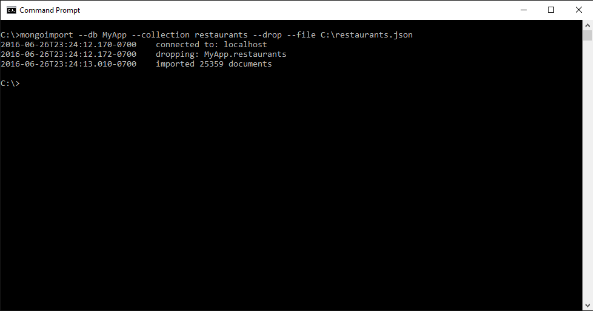

2. Initial Commands
In this part we are going to learn some basics commands that involves mongodb server, using the cmd.
First, you start your server using mongod and another cmd for mongo.
Database
Next we can create a new database or switch to one using the command use.
use my-new-database
switched to db my-new-database
Another way to already connect in a database instance instead if the test instance you can use the command mongo followed by the database name.
mongo my-database-name
connecting to: my-database-name
If you want to check which database your are now you can use the command db and it will return the name of the current database.
db
my-new-database
The command show dbs will list all databases available in your mongodb server.
show dbs
local 0.078GB
Drop database
To drop a database we just execute the command dropDatabase() from db object.
use bank_to_remove
switched to db bank_to_remove
db.dropDatabase()
{
"dropped": "bank_to_remove",
"ok": 1
}
Collections
To list all collections available in your database you can use the command show collections.
C:\>mongo MyApp
MongoDB shell version: 3.2.7
connecting to: MyApp
Mongo-Hacker 0.0.13
(mongod-3.2.7) MyApp> show collections
restaurants → 10.138MB / 4.457MB
If you would like to create a new empty collection you must use the command db.createCollection(“name”).
(mongod-3.2.7) MyApp> db.createCollection("new_collection")
{
"ok": 1
}
(mongod-3.2.7) MyApp> show collections
new_collection → 0.000MB / 0.004MB
restaurants → 10.138MB / 4.457MB
More information about it you can consult here
Also the first time a new item is inserted in a collection that doesn’t exists the collection will also be created.
(mongod-3.2.7) MyApp> var json = {test: true}
(mongod-3.2.7) MyApp> db.test.insert(json)
Inserted 1 record(s) in 12ms
WriteResult({
"nInserted": 1
})
(mongod-3.2.7) MyApp> db.test.insert(json)
Inserted 1 record(s) in 1ms
WriteResult({
"nInserted": 1
})
(mongod-3.2.7) MyApp> show collections
new_collection → 0.000MB / 0.004MB
restaurants → 10.138MB / 4.457MB
test → 0.000MB / 0.016MB
The first insertion will take a little bit longer than the next ones, in the example above the first one took 12ms and the next one 1ms. This happens because for the first insertion MongoDB will pre allocate the necessary space on disk for the new collection.
Import and Export
To import data from a file to a new collection we can use the command mongoimport.
mongoimport --db database --collection collection --drop --file data.json

mongoimport usage.
To export data from a collection to a new file we can use the command mongoexport.
mongoexport --db data_base_name --collection collection_name --out my_collection.json
MongoDB Documentation
You can find more information about the commands here